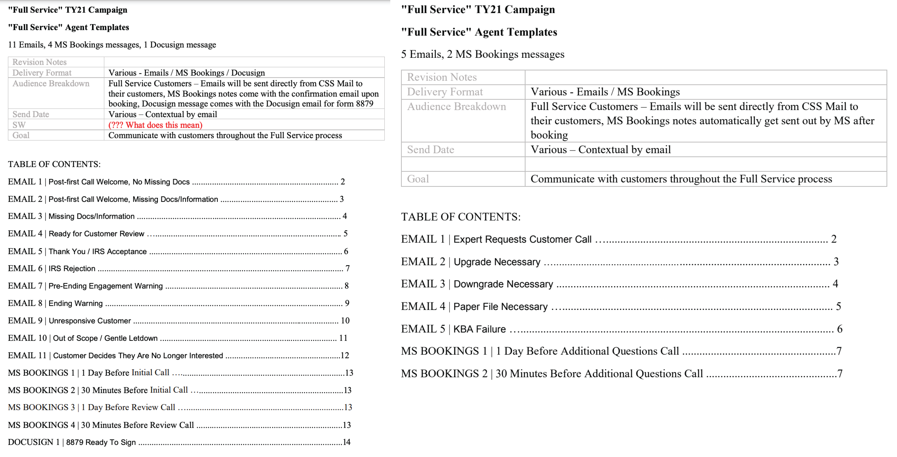

- •
- •
- •
TaxAct - "Xpert Full Service"
2021 - Service Design
Led new E2E Offering, expansion into new market
Customer research revealed that loyal TaxAct customers were turning to competitors once their tax situations became more complicated than they felt confident handling on their own. The DIY Taxact software also allowed customers to add “Xpert Assist”- but it wasn’t meeting the needs of some customers.
In an effort to differentiate themselves from competitors and retain customers whose tax situations have become more complicated, TaxAct felt the need to expand their do-it-yourself product suite to include a hands-off option for customers.
This project required collaboration across nearly the entire organization. Coordination involving marketing, customer service, onboarding/training, and tax experts would be a necessity to provide a seamless experience for both customers AND new tax expert employees.
Unfortunately just as the project kicked off, the Product Director left the organization, leaving big shoes to fill. As a result, I jumped into action and took on a lot more than just a Service Design role- I was responsible for marketing and communication content creation, content/design for training guides for new employees, process design for employees, etc. in order to get this new product offering off the ground in the tight timeframe before tax season marketing began.
After a thorough analysis of the top four competitors, TaxAct invested in expanding their do-it-yourself product suite to include a hands-off option for customers: Xpert Full Service. Customers would simply upload their documents and answer a few short questions, and a licensed tax expert would take it from there.
I assembled a few focus groups of tax experts who were already working with TaxAct and put together a user flow of their typical experience preparing tax documents for private clients.
We assessed when touchpoints would be beneficial, and began to identify pain points for both agents and customers.
I started to put together an Expert/Customer Journey Document- keeping track of each action a customer or expert may need to take, each application an expert would need to use for individual actions, each time any communication would get sent to either customers or experts- and what would be “Frontstage” (visible to customers) and “Backstage” (behind the scenes/visible to experts only). Once we started to see a “plan” emerging, it was time to amp up the cross-collaboration with marketing, training, legal, Microsoft Booking, Docusign, etc.
In order to ensure communication was clear and thorough, I put together communications plans for both “Happy Path” and “Unhappy Path” situations. I drafted a total of 16 emails, 6 MS Booking messages, and 1 Docusign message, and worked with the marketing and legal teams to shore up each email/message to perfection.

If TaxAct wanted to be prepared for the volume of customers we estimated would partake in this new Xpert Full Service product offering, we’d need to hire and train 150 new Tax Experts. With a tight timeframe of 3 months to onboard and train so many new employees, this was no small task.
I worked with the Onboarding expert in HR to develop a 3 day training course for these new Tax Experts that walked through each step of the new product offering. In order to execute these trainings and create a sustainable system that could continue to expand in the future, we identified 5 Tax Experts from our focus groups who were already pros- and promoted them to supervisory roles.
We prepared them to help interview potential Tax Experts, and upon Hiring/Onboarding, each take on 3 groups of 10-15 new employees over the course of 2 weeks and get each group up to speed.
Every Monday/Wednesday/Friday we had hour-long working sessions containing differing groups - we’d rotate who was involved from marketing, legal, product, our tax expert focus groups, etc - and ensure all parties involved had an opportunity to raise flags as we filled in the details of the Customer/Expert Journey.
Once we had built out the entire customer experience, set up the booking experience, prepared the marketing emails, and everyone was trained and ready- we did a handful of “trial runs”, testing best/worst case scenarios and everything in between. We identified weak points/areas where communication was lacking and filled in the gaps before rolling out this new offering for the 2021 tax season.
Just in time for the 2021 tax season, TaxAct was able to compete with competitors and roll out the Xpert Full Service experience for customers. As the service scales in the future, TaxAct has a scalable training system allowing for easy onboarding of additional agents. While I was no longer with the organization post-rollout, I know we set up the teams for long-term success with the thorough process documentation we put together.